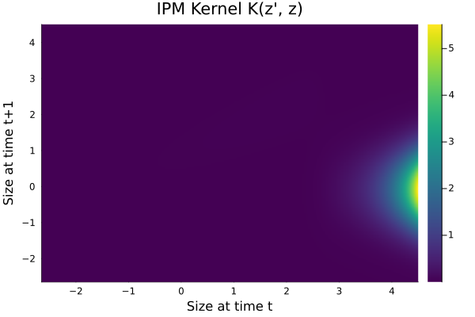
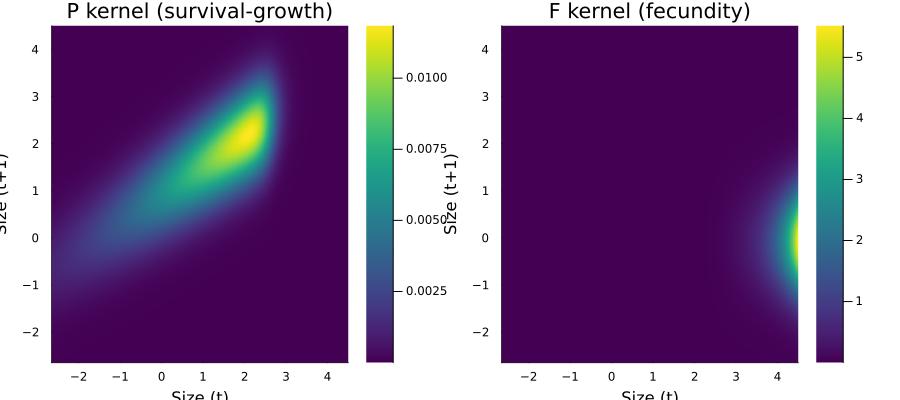
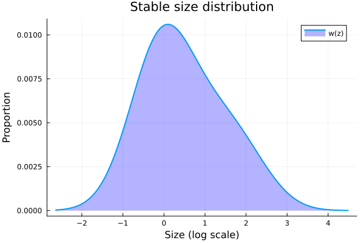
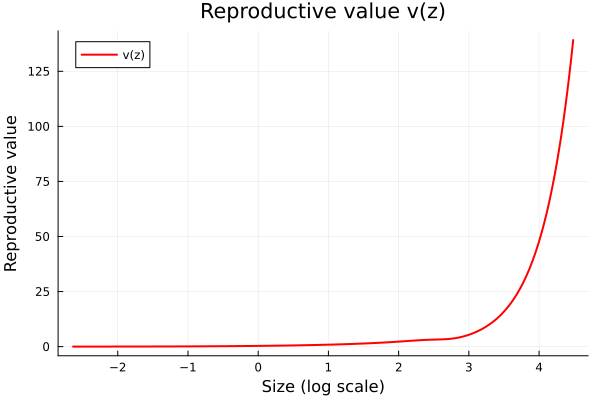
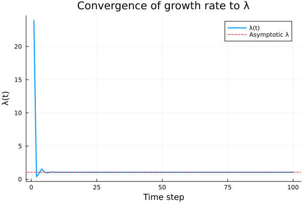
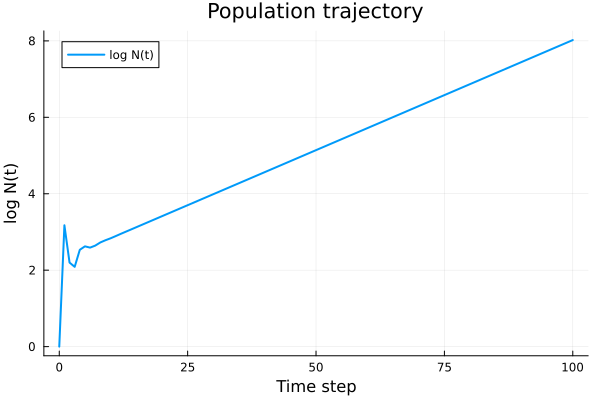
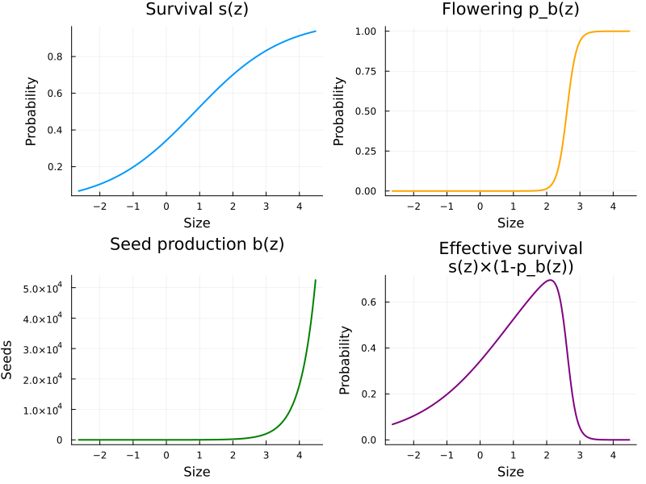

Introduction to Integral Projection Models
Overview
This vignette introduces Integral Projection Models (IPMs) using the classic monocarpic perennial Oenothera glazioviana (evening primrose) example from Ellner, Childs & Rees. We construct a simple, density-independent, deterministic IPM, compute the asymptotic growth rate $\lambda$, and examine the stable size distribution.
An IPM tracks the size distribution $n(z, t)$ of a structured population. The core equation is:
$
n(z', t+1) = \int_{L}^{U} K(z', z) \, n(z, t) \, dz $
where $K(z', z) = P(z', z) + F(z', z)$ is the projection kernel, composed of a survival-growth kernel $P$ and a fecundity kernel $F$.
Setup
using IntegralProjectionModels
using Distributions
using LinearAlgebra
using PlotsThe Monocarp Model
Oenothera is a monocarpic perennial: plants grow vegetatively for several years, then flower once and die. Size is measured on a log scale. The parameters come from Kachi & Hirose (1985) and Rees & Rose (2002).
Parameters
# Survival (logistic regression)
surv_int = -0.65
surv_z = 0.75
# Flowering probability (logistic regression)
flow_int = -18.0
flow_z = 6.9
# Growth (linear model with normal errors)
grow_int = 0.96
grow_z = 0.59
grow_sd = 0.67
# Recruit size distribution
rcsz_int = -0.08
rcsz_sd = 0.76
# Seed production (Poisson GLM, log link)
seed_int = 1.0
seed_z = 2.2
# Establishment probability
p_r = 0.0070.007Domain
The domain spans the range of log sizes, with bounds set slightly beyond the observed data range to minimize eviction (loss of individuals outside the domain).
L = -2.65
U = 4.5
m = 250
domain = ContinuousDomain(L, U, m)
z = meshpoints(domain)
h = step_size(domain)0.0286Vital Rate Functions
Survival: logistic function of size.
s_z(z) = 1.0 / (1.0 + exp(-(surv_int + surv_z * z)))s_z (generic function with 1 method)Flowering probability: logistic function of size. Since Oenothera is monocarpic, flowering individuals die after reproduction.
p_bz(z) = 1.0 / (1.0 + exp(-(flow_int + flow_z * z)))p_bz (generic function with 1 method)Growth: transition from size $z$ to $z'$ follows a normal distribution.
G_z1z(z_prime, z) = pdf(Normal(grow_int + grow_z * z, grow_sd), z_prime)G_z1z (generic function with 1 method)Seed production: exponential function of size (Poisson GLM on log scale).
b_z(z) = exp(seed_int + seed_z * z)b_z (generic function with 1 method)Recruit size distribution: normal, independent of parent size.
c_0z1(z_prime) = pdf(Normal(rcsz_int, rcsz_sd), z_prime)c_0z1 (generic function with 1 method)Kernel Construction
The P kernel (survival-growth) describes the probability that an individual of size $z$ survives, does not flower, and grows to size $z'$:
$
P(z', z) = s(z) \cdot (1 - p_b(z)) \cdot G(z'|z) $
The F kernel (fecundity) describes the production of new recruits of size $z'$ from flowering individuals of size $z$:
$
F(z', z) = pb(z) \cdot b(z) \cdot pr \cdot c_0(z') $
# Combined survival for P kernel: survive AND don't flower
P_survival(z) = s_z(z) * (1.0 - p_bz(z))
# Fecundity function: flowering × seeds × establishment × recruit size
function F_z1z(z_prime, z)
return p_bz(z) * b_z(z) * p_r * c_0z1(z_prime)
end
# Build kernels
P = PKernel(CustomVitalRate(P_survival), CustomVitalRate(G_z1z), domain)
F = FKernel(CustomVitalRate(F_z1z), domain)
K = P + FComposedKernel{Tuple{PKernel{CustomVitalRate{typeof(Main.P_survival), Nothing}, CustomVitalRate{typeof(Main.G_z1z), Nothing}, ContinuousDomain{Float64}}, FKernel{CustomVitalRate{typeof(Main.F_z1z), Nothing}, ContinuousDomain{Float64}}}}((PKernel{CustomVitalRate{typeof(Main.P_survival), Nothing}, CustomVitalRate{typeof(Main.G_z1z), Nothing}, ContinuousDomain{Float64}}(CustomVitalRate{typeof(Main.P_survival), Nothing}(Main.P_survival, nothing), CustomVitalRate{typeof(Main.G_z1z), Nothing}(Main.G_z1z, nothing), ContinuousDomain{Float64}(-2.65, 4.5, 250), NoCorrection), FKernel{CustomVitalRate{typeof(Main.F_z1z), Nothing}, ContinuousDomain{Float64}}(CustomVitalRate{typeof(Main.F_z1z), Nothing}(Main.F_z1z, nothing), ContinuousDomain{Float64}(-2.65, 4.5, 250), NoCorrection)))Materialize and Inspect the Kernel
The materialize function discretizes the continuous kernel using the midpoint rule, producing an $m \times m$ matrix.
K_matrix = materialize(K)
P_matrix = materialize(P)
F_matrix = materialize(F)250×250 Matrix{Float64}:
5.84142e-25 7.57788e-25 9.83054e-25 … 0.0170418 0.0181485 0.0193271
6.62475e-25 8.59407e-25 1.11488e-24 0.0193271 0.0205822 0.0219189
7.50248e-25 9.73272e-25 1.26259e-24 0.0218878 0.0233092 0.024823
8.48449e-25 1.10066e-24 1.42786e-24 0.0247527 0.0263602 0.0280721
9.58145e-25 1.24297e-24 1.61247e-24 0.027953 0.0297683 0.0317015
1.08049e-24 1.40169e-24 1.81836e-24 … 0.0315224 0.0335695 0.0357496
1.21674e-24 1.57844e-24 2.04765e-24 0.0354972 0.0378025 0.0402575
1.36823e-24 1.77496e-24 2.30259e-24 0.0399167 0.042509 0.0452696
1.5364e-24 1.99312e-24 2.58561e-24 0.044823 0.0477339 0.0508338
1.7228e-24 2.23493e-24 2.8993e-24 0.050261 0.0535251 0.0570011
⋮ ⋱
1.41571e-29 1.83655e-29 2.3825e-29 4.1302e-7 4.39843e-7 4.68407e-7
1.14131e-29 1.48059e-29 1.92072e-29 3.32968e-7 3.54591e-7 3.77619e-7
9.18801e-30 1.19193e-29 1.54625e-29 2.68051e-7 2.85459e-7 3.03998e-7
7.38622e-30 9.5819e-30 1.24303e-29 2.15486e-7 2.2948e-7 2.44383e-7
5.92936e-30 7.69197e-30 9.97854e-30 … 1.72984e-7 1.84218e-7 1.96181e-7
4.75312e-30 6.16607e-30 7.99904e-30 1.38668e-7 1.47673e-7 1.57263e-7
3.80483e-30 4.93588e-30 6.40315e-30 1.11002e-7 1.18211e-7 1.25888e-7
3.04142e-30 3.94553e-30 5.11841e-30 8.87304e-8 9.44927e-8 1.00629e-7
2.42774e-30 3.14942e-30 4.08564e-30 7.08269e-8 7.54266e-8 8.03249e-8println("Kernel matrix size: ", size(K_matrix))
println("K = P + F check: ", maximum(abs.(K_matrix - P_matrix - F_matrix)))Kernel matrix size: (250, 250)
K = P + F check: 1.3877787807814457e-17Visualize the Kernel
heatmap(z, z, K_matrix,
xlabel="Size at time t",
ylabel="Size at time t+1",
title="IPM Kernel K(z', z)",
color=:viridis)
p1 = heatmap(z, z, P_matrix, title="P kernel (survival-growth)",
xlabel="Size (t)", ylabel="Size (t+1)", color=:viridis)
p2 = heatmap(z, z, F_matrix, title="F kernel (fecundity)",
xlabel="Size (t)", ylabel="Size (t+1)", color=:viridis)
plot(p1, p2, layout=(1, 2), size=(900, 400))
Eigenanalysis
The asymptotic growth rate $\lambda$ is the dominant eigenvalue of the kernel matrix $K$. The stable size distribution is the corresponding right eigenvector, and the reproductive value is the left eigenvector.
n0 = uniform_population(domain)
prob = IPMProblem(K, domain, n0, (0, 100))
sol = solve(prob, EigenAnalysis())
λ = lambda(sol)1.059306809536005println("Asymptotic growth rate (λ): ", λ)Asymptotic growth rate (λ): 1.059306809536005Stable Size Distribution
The stable size distribution $w(z)$ is the right eigenvector of $K$, normalized to sum to 1. It gives the proportional distribution of sizes in the population at the stable state.
w = stable_distribution(sol)
plot(z, w,
xlabel="Size (log scale)",
ylabel="Proportion",
title="Stable size distribution",
label="w(z)",
linewidth=2,
fill=(0, 0.3, :blue))
Reproductive Value
The reproductive value $v(z)$ is the left eigenvector. It gives the expected contribution of an individual of size $z$ to future population growth, relative to a newborn.
v = reproductive_value(sol)
plot(z, v,
xlabel="Size (log scale)",
ylabel="Reproductive value",
title="Reproductive value v(z)",
label="v(z)",
linewidth=2,
color=:red)
Mean Size at Stable Distribution
mean_z = sum(w .* z)0.5010309521733789println("Mean size (log scale) at stable distribution: ", round(mean_z, digits=3))Mean size (log scale) at stable distribution: 0.501Population Projection
We can also solve the IPM by direct iteration to see the transient dynamics before the population converges to the stable growth rate.
sol_iter = solve(prob, DirectIteration())IPMSolution{Vector{Int64}, Vector{Vector{Float64}}, Matrix{Float64}, @NamedTuple{lambda::Float64, stable_dist::Vector{Float64}, repro_value::Vector{Float64}}}([0, 1, 2, 3, 4, 5, 6, 7, 8, 9 … 91, 92, 93, 94, 95, 96, 97, 98, 99, 100], [[0.004, 0.004, 0.004, 0.004, 0.004, 0.004, 0.004, 0.004, 0.004, 0.004 … 0.004, 0.004, 0.004, 0.004, 0.004, 0.004, 0.004, 0.004, 0.004, 0.004], [0.00124492909313817, 0.0014118861219725447, 0.0015989678152751618, 0.0018082762319774908, 0.0020420897442355035, 0.0023028723876597464, 0.002593283030792129, 0.0029161842577709106, 0.0032746508475271423, 0.0036719777223071307 … 3.0693981003635014e-5, 2.7298094808868684e-5, 2.4239855285130746e-5, 2.1490430868644307e-5, 1.9022892786993082e-5, 1.6812152700020378e-5, 1.483489498429363e-5, 1.3069504694474343e-5, 1.1495992185313153e-5, 1.0095915319531279e-5], [4.6210017187931986e-5, 5.2518842812631366e-5, 5.960982145104788e-5, 6.756873273317783e-5, 7.648930228048099e-5, 8.647376341889975e-5, 9.763343976615416e-5, 0.00011008934756717809, 0.00012397281644360703, 0.00013942612701501992 … 5.739776215174209e-5, 4.992435763221914e-5, 4.336571641086307e-5, 3.761796325954516e-5, 3.258794146139614e-5, 2.8192244043389576e-5, 2.4356315741296703e-5, 2.101362256099144e-5, 1.810488567915001e-5, 1.5577376350333788e-5], [0.00019027398683837238, 0.00021579577720268626, 0.000244394892018022, 0.0002763929785073223, 0.00031213870782736595, 0.00035200921774595107, 0.0003964115297954293, 0.0004457839249709042, 0.000500597260451719, 0.0005613562082451206 … 0.00025019771316851634, 0.00022004717897326648, 0.00019322771568527878, 0.00016941160322469704, 0.00014829823821937424, 0.0001296125159723616, 0.00011310323301167418, 9.854152073737755e-5, 8.571931914390019e-5, 7.44478981415329e-5], [0.0004742817431927174, 0.0005378995785592265, 0.0006091883711710587, 0.0006889498951560855, 0.000778053278159069, 0.0008774385935096259, 0.0009881203876672482, 0.0011111911029970587, 0.0012478243519274163, 0.0013992779945572558 … 0.0002931068390408819, 0.0002590551205337384, 0.000228593928272719, 0.00020139215582768875, 0.0001771433502502803, 0.00015556457824419148, 0.0001363952587076659, 0.00011939597522420779, 0.00010434728074353315, 9.104850537112532e-5], [0.00046795315165405185, 0.0005307480140295218, 0.0006011196337973624, 0.0006798608851751369, 0.000767831422085074, 0.0008659612721276623, 0.000975254373083608, 0.001096792013181001, 0.001231736132458117, 0.0013813324386643827 … 0.0002463469152720171, 0.0002176794408133549, 0.0001920470691534782, 0.00016916733872955478, 0.00014877930709010333, 0.000130642470837926, 0.00011453567409142257, 0.00010025601513611558, 8.761775993003856e-5, 7.645127012992077e-5], [0.0004115043200737394, 0.00046672940722455755, 0.0005286189015287265, 0.0005978703972410921, 0.000675240279728962, 0.0007615468964573283, 0.0008576736788538908, 0.0009645721811241511, 0.0010832649986646753, 0.0012148485253172178 … 0.00025604996316637766, 0.0002259166749553412, 0.00019902037227256182, 0.00017505359278078802, 0.00015373309725574805, 0.00013479855015189287, 0.00011801120286673932, 0.0001031525894857582, 9.002324361614284e-5, 7.844144377856838e-5], [0.0004503656399469187, 0.000510796915782858, 0.0005785190969289892, 0.0006542950235944254, 0.0007389517647880219, 0.0008333840712424484, 0.0009385577723267167, 0.001055513079583414, 0.0011853677557662925, 0.0013293201045118184 … 0.0002906548103344919, 0.00025650557758219797, 0.00022601488580698066, 0.00019883686825605384, 0.00017465264400391348, 0.00015316889029981807, 0.00013411641000876388, 0.00011724870593589625, 0.00010234057246332327, 8.918671360289265e-5], [0.0005017940436364467, 0.0005691251941893096, 0.0006445795193955947, 0.000729006902700429, 0.000823328778153953, 0.0009285419755898471, 0.0010457225031104132, 0.0011760292252139272, 0.0013207073907067616, 0.0014810919603700198 … 0.0003085879040651054, 0.00027243299528554324, 0.0002401376672067075, 0.00021133885482693497, 0.00018570159358997842, 0.00016291756134030255, 0.0001427036108967727, 0.00012480030581639963, 0.00010897047051488524, 9.499776453676045e-5], [0.0005261765610068952, 0.0005967820607711802, 0.0006759062906123866, 0.0007644406167601913, 0.0008633514664386548, 0.000973684365049611, 0.0010965679082811312, 0.0012332176255202686, 0.001384939686556861, 0.0015531343991941429 … 0.0003209960665958423, 0.0002833691454122346, 0.00024976204677550377, 0.00021979612494036908, 0.00019312212113292208, 0.00016941862579806377, 0.00014839053343025988, 0.00012976750287017894, 0.00011330243449554892, 9.876997431368083e-5] … [0.058817208274012274, 0.06670960391077735, 0.0755542277944113, 0.08545071565875342, 0.09650709315706171, 0.10884022706281789, 0.12257626918593612, 0.13785108812739225, 0.1548106835042511, 0.1736115767884316 … 0.03630408312033855, 0.03204655836119628, 0.028244136348564406, 0.024853918065874815, 0.021836337354300416, 0.01915498615261368, 0.016776438937134455, 0.014670077822685621, 0.012807919619830759, 0.011164445981930938], [0.06230546924255867, 0.07066593768413619, 0.08003510799185443, 0.09051852497704242, 0.10223062094980111, 0.11529519367908796, 0.12984587663618055, 0.1460265963552946, 0.16399201122497653, 0.1839079255062686 … 0.038457162463335776, 0.03394713749420822, 0.02991920596349767, 0.02632792465083113, 0.023131380854735883, 0.02029100726803155, 0.017771396005871506, 0.015540113333994007, 0.013567516469276526, 0.011826573653356341], [0.06600060783997853, 0.07485690899105245, 0.08478173489772092, 0.09588688989733603, 0.10829359291521848, 0.12213298377103048, 0.1375466213108781, 0.15468696789252911, 0.17371785420012262, 0.1948149178164307 … 0.04073793407284405, 0.03596043391186982, 0.03169361861304333, 0.027889349863576267, 0.0245032292533925, 0.021494402171370407, 0.01882536080398065, 0.01646174787566113, 0.014372162584396518, 0.012527970004479479], [0.06991489331840471, 0.0792964334350389, 0.08980986910143217, 0.10157363541347722, 0.11471614040421106, 0.129376301377603, 0.1457040725832834, 0.16386095843503354, 0.1840205058921728, 0.20636876904214235 … 0.04315397096979253, 0.03809313251671315, 0.03357326601563389, 0.029543378224018396, 0.025956437603740518, 0.022769166587038165, 0.01994183289162891, 0.017438041621552703, 0.015224529693409827, 0.013270963935407935], [0.07406132258016945, 0.08399925190965526, 0.09513620590268437, 0.10759764366282394, 0.12151958869386921, 0.1370491970418773, 0.15434531626460046, 0.1735790290873273, 0.19493417498583923, 0.2186078423219045 … 0.04571329530682032, 0.04035231467151167, 0.035564389308724735, 0.031295501729400425, 0.027495831104938757, 0.024119533213109213, 0.02112451937673158, 0.01847223623468306, 0.016127447976212128, 0.014058022465884362], [0.07845366333241623, 0.0889809795438281, 0.10077843074613302, 0.11397891662205802, 0.1287265277954302, 0.14517714766790238, 0.16349904453907962, 0.18387344750485415, 0.2064950989737827, 0.23157277598956674 … 0.048424405004845086, 0.04274548171207198, 0.03767359977172161, 0.0331515380897997, 0.029126521123313532, 0.02554998577547643, 0.02237734722394706, 0.0195677656307575, 0.01708391546163919, 0.014891758926721444], [0.0831064998010737, 0.09425815754996109, 0.10675527794373142, 0.12073864252128266, 0.13636088746162509, 0.15378714111362313, 0.17319565123287767, 0.19477839503475322, 0.2187416644787394, 0.24530661850890403 … 0.05129630196936182, 0.04528057985449464, 0.03990790077791879, 0.03511765004511706, 0.03085392216402031, 0.027065273915510252, 0.023704476293678736, 0.020728267380066025, 0.01809710798205183, 0.015774941637044623], [0.08803528115598004, 0.09984830814699139, 0.11308659287970363, 0.1278992661969282, 0.14444801664247237, 0.1629077658007356, 0.18346733273301033, 0.20633008021080812, 0.23171453471156875, 0.25985497141073305 … 0.054338521980160176, 0.047966026579605026, 0.042274711048336605, 0.03720036582769492, 0.03268376984924061, 0.02867042896065724, 0.0251103131543787, 0.02195759478558699, 0.019170389718295905, 0.016710503096154433], [0.09325637280794642, 0.10576999274075737, 0.11979339790469597, 0.13548456361706424, 0.15301476765334115, 0.17256930563901593, 0.19434819489148586, 0.21856685897941922, 0.2454567844884318, 0.2752661407071734 … 0.057561166353705555, 0.050810738582160606, 0.04478188928466996, 0.039406600838507715, 0.03462213996260814, 0.03037078063034251, 0.02659952571401489, 0.023259829677404573, 0.020307324370049864, 0.017701549720528887], [0.098787110748086, 0.11204287355485812, 0.12689796213790064, 0.14351972082657022, 0.16208958533475393, 0.1828038405803097, 0.2058743662695816, 0.23152936205579455, 0.2600140432554075, 0.291591297285805 … 0.06097493548331505, 0.05382416137763657, 0.04743776026313835, 0.041743680608898485, 0.036675468623099464, 0.032171974732646005, 0.028177058719284026, 0.02463929596592233, 0.021511686988650296, 0.018751372158296416]], [1.1110421665550782e-5 1.0494470681745093e-5 … 0.01814851939934913 0.01932712402731852; 1.2641488078684378e-5 1.195350013727936e-5 … 0.020582207746836622 0.02191886143028361; … ; 5.165879172721609e-16 6.370361584889932e-16 … 1.1443649894774092e-7 1.1756141413173437e-7; 3.7407435069991974e-16 4.617901499172823e-16 … 9.428085681700637e-8 9.634930511865021e-8], (lambda = 1.0593068095363487, stable_dist = [3.244524694628955e-5, 3.6798917121176165e-5, 4.1677863512420416e-5, 4.7137048028007325e-5, 5.3236060694382235e-5, 6.0039368551663125e-5, 6.761656053046233e-5, 7.604258562003428e-5, 8.539798136659614e-5, 9.576908947111987e-5 … 2.002636603405365e-5, 1.7677794140831613e-5, 1.558026988196265e-5, 1.3710128938327477e-5, 1.2045545490042253e-5, 1.0566435813788114e-5, 9.254361438887303e-6, 8.092432668009816e-6, 7.065213177021076e-6, 6.158626319261784e-6], repro_value = [0.014154983608349382, 0.014701260634660977, 0.015267672932742594, 0.015854918085100044, 0.01646371570635641, 0.017094808038740462, 0.017748960558768623, 0.01842696259506046, 0.019129627957207348, 0.01985779557559225 … 78.99922851705375, 84.12971487235212, 89.59336728241779, 95.41182376884986, 101.60812740657191, 108.20681758150845, 115.23402717453139, 122.717586056359, 130.6871313031467, 139.17422456912564]), :Success, [23.925452379824392, 0.3767950503662974, 0.8938810922593436, 1.5626377799875868, 1.0946090877167478, 0.96717912357785, 1.0535464259647431, 1.0867677025501463, 1.059780756482157, 1.0520914591048653 … 1.0593068095360048, 1.0593068095360054, 1.059306809536005, 1.0593068095360054, 1.059306809536005, 1.0593068095360054, 1.0593068095360054, 1.0593068095360052, 1.0593068095360052, 1.0593068095360048])# Plot per-step growth rates converging to λ
plot(sol_iter.lambdas,
xlabel="Time step",
ylabel="λ(t)",
title="Convergence of growth rate to λ",
label="λ(t)",
linewidth=2)
hline!([λ], label="Asymptotic λ", linestyle=:dash, color=:red)
# Total population trajectory (log scale)
total_pop = [sum(u) for u in sol_iter.u]
plot(0:100, log.(total_pop),
xlabel="Time step",
ylabel="log N(t)",
title="Population trajectory",
label="log N(t)",
linewidth=2)
Vital Rate Diagnostics
Let us visualize the vital rates across the size domain.
p1 = plot(z, s_z.(z), xlabel="Size", ylabel="Probability",
title="Survival s(z)", label=false, linewidth=2)
p2 = plot(z, p_bz.(z), xlabel="Size", ylabel="Probability",
title="Flowering p_b(z)", label=false, linewidth=2, color=:orange)
p3 = plot(z, b_z.(z), xlabel="Size", ylabel="Seeds",
title="Seed production b(z)", label=false, linewidth=2, color=:green)
p4 = plot(z, P_survival.(z), xlabel="Size", ylabel="Probability",
title="Effective survival\ns(z)×(1-p_b(z))", label=false, linewidth=2, color=:purple)
plot(p1, p2, p3, p4, layout=(2, 2), size=(800, 600))
Summary
In this vignette we:
- Defined vital rate functions for a monocarpic perennial (Oenothera)
- Constructed P (survival-growth) and F (fecundity) kernels
- Discretized the kernel using the midpoint rule (250 mesh points on $[-2.65, 4.5]$)
- Computed the asymptotic growth rate $\lambda$ via eigenanalysis
- Examined the stable size distribution and reproductive value
- Projected population dynamics via direct iteration
The next vignette covers an iteroparous species (Soay sheep) with a different life history structure.